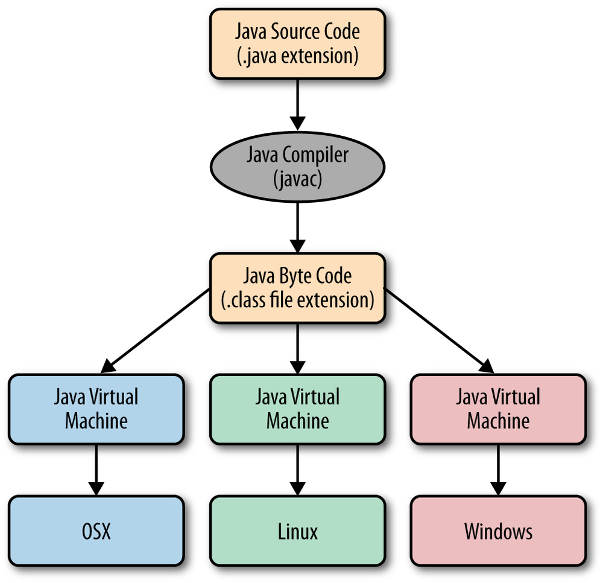
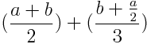

Codul sursa
Codul sursa sau "programul sursa” (en: "source code”) reprezintă un set de instrucțiuni, specific unui anumit limbaj de programare. Codul sursă permite programatorului să comunice cu computerul folosind un număr bine definit de instrucțiuni.
Comenzi/Instructiuni
Un program executa diferite actiuni sau operatii pe baza unor 'comenzi'. Spre exemplu daca dorim sa afisam pe ecran textul "Salut", trebuie sa apelam 'comanda' System.out.println
System.out.println("Hello world!");Comanda System.out.println afiseaza pe ecran textul furnizat in interiorul parantezelor
Rularea unui program
Calculatorul nu executa/"intelege" in mod direct codul sursa, acesta trebuie compilat (in cazul Java)
Structura codului sursa
se foloseste pentru separarea instructiunilor
System.out.print("Hello "); System.out.print("world");
System.out.print("!");
Sunt folosite pentru a transmite informatii/date instructiunilor
//Acum afisam un salut utilizatorului
System.out.println("Hello world!");Verificam daca avem Java instalat
java -version
In cazul in care Java este instalat primim un mesaj asemanator cu cel de mai jos:
[posa@localhost Documents]$ java -version
openjdk version "1.8.0_141"
OpenJDK Runtime Environment (build 1.8.0_141-b16)
OpenJDK 64-Bit Server VM (build 25.141-b16, mixed mode)
Pasii necesari pentru a crea un program Java
Pentru a realiza un program Java sunt necesari 3 pasi: crearea codului sursa, compilarea codului sursa si rularea programului.
Crearea fisierului cod sursa
Folosind un editor de text (spre exemplu Notepad) creati un fisier cu numele PrimulProgram.java
Adaugati urmatoarea secventa de cod in cadrul fisierului mai sus creat
public class PrimulProgram {
public static void main(String[] args) {
}
}
Folosind doar sectiunea mai sus mentionata, adaugati comenzi codului-sursa pentru a afisa pe ecran textul "Salutari de la primul meu program Java"
In final, fisierul PrimulProgram.java trebuie sa aibe continutul
public class PrimulProgram {
public static void main(String[] args) {
System.out.println("Salutari de la primul meu program Java");
}
}
Compilarea codului sursa
Deschideti un terminal de comenzi (cmd) si folosind utilitarul javac compilati codul sursa
javac PrimulProgram.java
Rularea programului
Folosind comanda de mai jos rulati programul nou creat:
java PrimulProgram
IDE
In cadrul acestui curs vom folosi IntelliJ IDEA 
Crearea unui proiect Java
Pentru crearea/definirea unui proiect Java folosind IntelliJ IDEA se urmaresc pasii:
Crearea unui fisier pentru codul-sursa
public class PrimulProgram {
public static void main(String[] args) {
}
}
Adaugarea de comenzi
Folosind doar sectiunea mai sus mentionata, adaugati comenzi codului-sursa pentru a afisa pe ecran textul "Salutari de la primul meu program Java"Compilarea si rularea
Odata finalizat codul-sursa el trebuie mai intai compilat si apoi rulat/executat. Folosind IntelliJ IDEA facem aceste doua operatiuni simultan prin selectarea optiuni Run din meniu si apasand butonul Run 'Primulprogram'
In cazul in care totul este corect, in partea de jos a IDE-ului va aparea 'rezultatul' rularii programului
1. Realizati un program pentru a afisa pe ecran textul "Salut" iar pe urmatoarele linii numele colegilor de langa tine (fiecare nume pe un rand nou)
2. Realizati un program pentru a afisa pe ecran un brad desenat din caractere ca in exemplul de mai jos:
*
***
*****
*******
*********
*
Variabile
In Java orice variabila are un tip.
Tipuri de variabile in Java: String (text), int, double, boolean (valori de adevar)
Declararea unei variabile
Sintaxa generala :
TIP NUME_VARIABLA = LITERAL; int a = 2; TIP NUME_VARIABLA = EXPRESIE; int a = 5 + 6; int a = b + 2; TIP NUME_VARIABLA; int a;
int speed = 240;
String name = "Bogdan";
double amount = 100.45d;
boolean iKnowJava = true;
System.out.println(speed);
System.out.println(name);
System.out.println(amount);
System.out.println(iKnowJava);
Rulati codul de mai sus si observati rezultatul
Literals
Un literal reprezinta o valoare constanta, precum 123, -456, 3.14, -1.2e3, 'a', "Hello", care este folosita in programul sursa. Poate fi asignat unei variabile sau folosita in expresii. Exemplu: 100, 100d, 100f, 100l, reprezinta literali pentru a declara un int, un double, un float, un long.
Tipuri de date
Tipul unei variabile determina valoarea pe care respectiva variabila o poate avea precum si operatiile care pot fi efectuate asupra ei. In Java exista 8 tipuri de date primitive ce sunt predefinite de catre limbaj si denumite prin cuvinte cheie rezervate.
|
Tip data |
Dimensiune |
Valori cu semn |
Tip |
| byte | 1 byte | -128 –> 127 | intreg |
| short | 2 bytes | -32768 –> 32767 | intreg |
| int | 4 bytes | -2147483648 –> 2147483647 | intreg |
| long | 8 bytes | -9,223,372,036,854,775,808 –> 9,223,372,036,854,775,807 | intreg |
| float | 4 bytes | 7 cifre semnificative | real simpla precizie |
| double | 8 bytes | 15 cifre semnificative | real dubla precizie |
| char | 2 bytes | ‘\u0000’ –> ‘\uffff’ 0 –> 65535 |
caracter Unicode pe 16 biti |
| boolean | 1 bit | true sau false | logic |
Exemple de declarare:
- Declarare int: int varsta = 18;
- Declarare float: float greutate = 77.5f;
- Declarare double: double greutate = 77.5;
Transformarea dintr-un tip in altul.
Este posibila transmiterea valorii unei variabile la o variabila de alt tip. Aceasta operatie se poate face in doua feluri:
- Fara pierdere de precizie: int to double
- Cu pierdere de precizie: double to int
In cazul in care se doreste copierea unei variabile catre o variabila cu un tip mai restrictiv (cu pierdere de informatie), acest lucru trebuie marcat explictiv in cod.
Aceste lucru se realizeaza prin marcarea tipului destinatie in fata expresiei ce trebuie asignata
double a = 45.3;
int b = (int) a;
System.out.println(b);
Operatori
Operatorii definesc operatii specifice ce se aplica asupra variabilelor pentru a obtine variabile noi
In exemplul de mai sus s-a folosit operatorul = ce semnifica asignarea unei valori pentru o variabila. O variabila poate fi doar declarata, fara a fi necesara initializarea ei. Valoarea unei variabile poate fi ulterior modificata prin re-asignare sau folosind operatorii mai jos mentionati
int speed;
speed =240;
Asupra variabilelor numerice (int, double) se pot folosi urmatorii operatori matematici:
In cazul String-urilor se poate folosi doar operatorul +, el semnificand concatenarea a doua sau mai multe String-uri
Expresii
Exemple:
1 + 2 * 3 // evaluat ca 7 int sum, number; sum = sum + number;O expresie se evalueaza si are ca rezultat o valoare ce trebuie folosita: asignata unei variabile sau transmisa ca si parametru unei comenzi.
Expresii aritmetice
In programare expresia
 se scrie, la fel ca in matematica, astfel:
se scrie, la fel ca in matematica, astfel:
(1+2*a)/3 + (4*(b+c)*(5-d-e))/f - 6*(7/g+h)
Expresii cu tipuri mixte
int a = 10; double b = 4.5; System.out.println(a + b);Raspunsul este in mod evident 14.5.
In cadrul unei expresii pot fi folosite variabile de tipuri diferite. In acest caz, pentru a stabili tipul valorii rezultate se aplica urmatoarele reguli:
1. int/int = int.int a = 3/2; // a va avea valoarea 1
2. Daca operanzii au acelasi tip atunci si tipul rezultant va fi acelasi.
3. Daca operanzii au tipuri diferite atunci operandul de tip inferior va fi promovat catre tipul operandului de tip superior ( in engleza "implicit type casting")
4. byte, short sau char sunt promovati mai intai la int si apoi se aplica regula 3.
Deci, revenim la intrebarea initiala, expresia (a+b) va avea tipul double.
String
Pentru a opera cu text, Java ofera clasa String. Momentan nu am definit termenul de clasa dar putem intelege String ca un tip de variabila care poate fi folosit pentru text.
O variabila de tip String ce contine textul "Salut" se poate declara astfel:
String salut = "Salut";
System.out.println(salut);
- In cadrul unui program Java declarati cate o variabila pentru fiecare dintre cele 8 tipuri de date primitive.
Asignati cate o valoare initialia valida fiecarei variabile. -
Folosind variabilele mai sus declarate incercati asignarea valorilor la variabile de alt tip.
Exemplificati principiile de transformare/conversie atat cu pierdere cat si fara pierdere de informatie
Spre exemplu://cu pierdere de informatie double a = 12.3; int b = (int) a; //fara pierdere de informatie int c = 10; double d = c; System.out.println(a); System.out.println(b); System.out.println(c); System.out.println(d); - Care este output-ul urmatorului program?
int x = 10; int y = x + 5; int z = y + x - 7; System.out.println(x); System.out.println(y); System.out.println(z);
- Realizati un program Java pentru a calcula numarul de secunde dintr-un an (365 zile)
- Completati codul de mai jos pentru a calcula valorea expresiei matematice: 
public static void main(String[] args) {
int a = 100;
int b = 10;
}